The bass is the glue of rhythm and harmony — it’s the rich, deep, mellow sound or the hypnotic rhythms. It’s part in the sound mix is the low range -- you're giving it the deep sounds. Bass is a tremendously powerful tool, because it gives a band its feel and attitude. Bass, most of the people doesn’t hear it but they can feel it.
Discovering the Differences between the Bass and Its High-Strung Cousins
Bass guitars differ from their high-strung cousins (other guitars) in several significant ways:
- Basses traditionally have four strings, while guitars have six. In the 1970s, some bassists started adding strings. Nowadays you can find five- and six-string basses (and beyond), but four-stringers are still the norm.
- The bass has a lower pitch than the guitar. The deep notes of the bass fill the lower end of the sound spectrum. Think of these notes as the “bass-ment,” or foundation, of music.
- The bass’s neck is longer than the guitar’s, thus making its strings longer. The longer the string, the lower the pitch; the shorter the string, the higher the pitch. Think of a Chihuahua and a Saint Bernard, for example. The Chihuahua has short vocal chords, and a rather high-pitched bark; the Saint Bernard . . . well . . . you get the idea.
- The bass player and the guitarist serve different functions.
Making the link between harmony and rhythm
You’re responsible for linking the harmony (chords) of a song with a distinctive rhythm (groove). This link contributes to the feel (emotion) and genre (general style) of the music. Feel and genre determine whether a song is rock, jazz, Latin, or anything else. (Groove is how the song feels)
Keeping time
Keeping a steady beat, or a pulse, is one of the bassist’s primary functions. I refer to this function as locking in with the drummer, because you work closely with the drummer to establish the rhythm. So be nice to your drummers. Listen to them carefully and know them well. And while the two of you are on such cozy terms.
Nothing works better than a metronome to help you develop an unfailing sense of time. The steady click that emanates from it provides an ideal backdrop for your own precise note placement, be it on or off the beat.
Illustration:
- The drummer is the bus (bus drivers).
The bassist is the tires. - The drummer is the heart.
The bassist is the blood.
Throughout these lessons you will come across terms describing parts of the bass guitar. These diagrams will help you identify different parts of the bass guitar. You should become familiar with these terms.
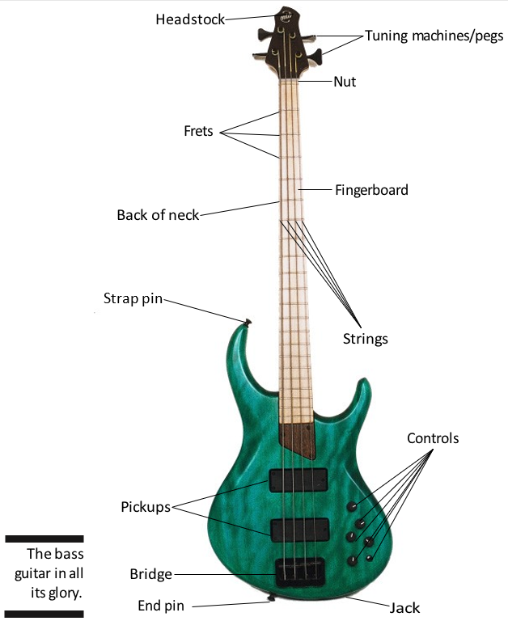You can divide the bass into three sections: The neck, the body, and the innards. The different parts of the neck and the body are easy to see, but the innards aren’t so obvious. You have to remove the cover (or covers) to get at the innards but knowing why they’re there is important.
The Neck
The neck of the bass guitar falls under the dominion of the fretting hand (usually the left hand). The following list describes the function of each part of the neck:
- The headstock: The headstock is the top of the neck. It holds the tuning machines for the strings. Many bass guitars have a distinctive straight neck and no head, which separates them from traditional guitars. These “headless” bass guitars have Tuning Pegs on the neck instead.
- The tuning machines/pegs: The tuning machines/pegs (also called tuners or tuning heads) hold the ends of the strings. (The other ends are anchored at the bridge on the body; see the next section for more info about the body of the bass.) By turning the individual tuning heads, you can increase or decrease the tension of the strings (which raises or lowers the pitch).
- The nut: The nut is a small piece of wood, plastic, graphite, or brass that provides a groove for each string. It forms one end of the vibrating length of the string.
- The fingerboard: The fingerboard, also called fretboard, is the flat side of the neck, beneath the strings, that holds the frets. There are also little markers along the Fretboard called inlays or fret markers.
- The frets: The frets are the thin metal strips that are embedded, perpendicular to the strings, along the length of the fingerboard. They determine the pitch (sound) of the note that’s played. Frets are arranged in half steps (the smallest unit of musical distance from one note to the next). When a string is pressed against a fret, the string’s vibrating length, and thus its pitch, is changed.
- The strings: Strictly speaking, the strings aren’t part of your bass, because you remove and replace them periodically. However, your bass would be absolutely useless without them. The strings are connected to the tuning machines at one end and to the bridge at the other. The vibration of the strings produces the sound of your bass.
- The back of the neck: The back of the neck refers to the part of the neck that the thumb of your fretting hand rests on. The fingerboard is attached to the front of the neck. The neck and the fingerboard usually are two separate pieces of wood, but not always.
The Body
The body of the bass guitar falls under the dominion of the striking hand (usually the right hand). The following list describes the function of each part of the body:
- The pickups: The pickups consist of magnets that are embedded in a plastic bar that lies underneath and perpendicular to the strings. You can have two magnets for each string, or one long magnet for all the strings. The magnets form a magnetic field, and the vibration of the string disturbs (or modulates) that field. This modulation is then translated into an electric signal, which in turn is converted into sound by the amplifier and speaker. Pickups near the neck of the guitar tend to produce a lower, "bassier" sound while one located nearer the bridge tends to transmit higher ranges of notes.
- The controls: The controls are the knobs used for adjusting the volume and tone (bass and treble) of the pickups. They’re located toward the lower end of your bass.
- The bridge: The strings are attached to the body at the bridge. The bridge holds one end of each string and is located at the end of the body. Modern pickups, such as piezo pickups or light wave pickups, are sometimes installed inside the bridge. These pickups read the vibration of the string at the bridge.
- The strap pin: The strap pin is the metal knob on the body near the neck, where you attach one end of your shoulder strap (usually the thick end).
- The end pin: The end pin is the metal knob on the bottom end of the body (by the bridge) where you attach the thin end of your shoulder strap.
- The jack: The jack (also called the input jack) is the socket used for connecting the cord from your bass to the amplifier.
The Innards
The innards aren’t visible to the eye (they’re hidden in the cavity of the instrument and covered with plates), but they’re essential to the sound and feel of the bass guitar. The following list describes the innards of the bass guitar:
- The truss rod: The truss rod is an adjustable metal rod that runs the length of your bass guitar’s neck. The truss rod controls the curvature of the neck and fingerboard and keeps them stable. If you need to make adjustments to it, you can reach it through the top or bottom of the neck.
- The electronics: The electronics of a bass guitar are a collection of wires, “pots” (short for potentiometers, or electronic capacitors, the round devices connected to the inner side of a volume knob), and other important-looking electronic items that help convert the vibration of the string into sound. The cavity for the electronics usually is located under a plate on the back of your bass guitar’s body. It also may be located under the control knobs on the front of your bass.
- The batteries: If your bass has active electronics (electronics with their own power source), you have one or two 9-volt batteries attached to the electronics (via some wires). These batteries are located in the same cavity as the electronics or in an adjacent cavity on the back of the body. If your bass has passive electronics (electronics with no batteries), you don’t have to worry about replacing batteries.
Whether you’re standing or sitting, the guitar neck should always point upwards at an angle. Hold the guitar in a vertical position and avoid laying it flat on your lap.
When sitting, rest the groove in the body of the guitar on one leg. You can cross your legs to raise your guitar a bit.
When standing, use a strap to sling the guitar around your neck. Generally, the lower your guitar, the cooler you look and the harder it is to play. Adjust the strap until you find a position that you feel comfortable with. If you think it’s too high, as you improve, slowly move it down until you get to the height at which you want to play. Having the middle of the guitar at belt height is the most common (and recommended) position.
The secret to getting your hands into position is simple: Keep them loose and relaxed. You want to strike and fret the strings with the least amount of effort possible. The proper position enables you to play at great speed and with great accuracy. It also helps you control your tone.
- The right hand is your striking hand; that is, it strikes (or plucks) each string and puts it into motion to produce a sound.
- Your left hand is your fretting hand; it presses the strings onto the fret to settle on a pitch.
If you’re left-handed, and you decide to play your bass as a lefty, apply the instructions for your right hand to your left hand, and vice versa.
Positioning your left hand
To fret a note, you press the string onto the neck between two frets with your left hand. For instance, to play a string at the 3rd fret, you press your finger between the 2nd and 3rd frets, closer to the 3rd. Take a look at the figure below to see the proper way to fret a note on the 3rd fret.
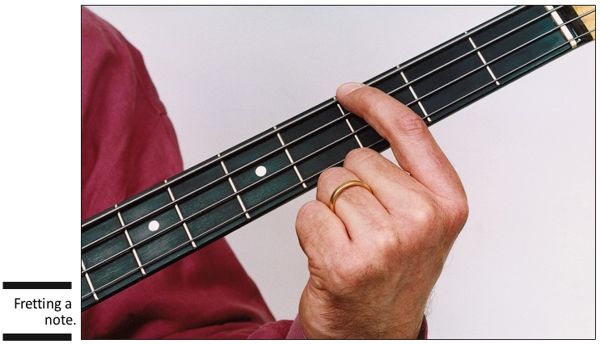 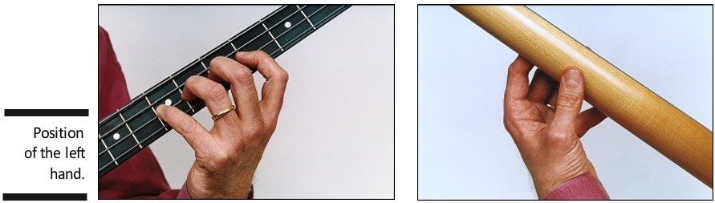Positioning your right hand
Finger-style playing
The name finger-style refers to your striking the strings with the index and middle fingers of your right hand. You can hear this style in country, rock, jazz, and funk — and just about any other type of music.
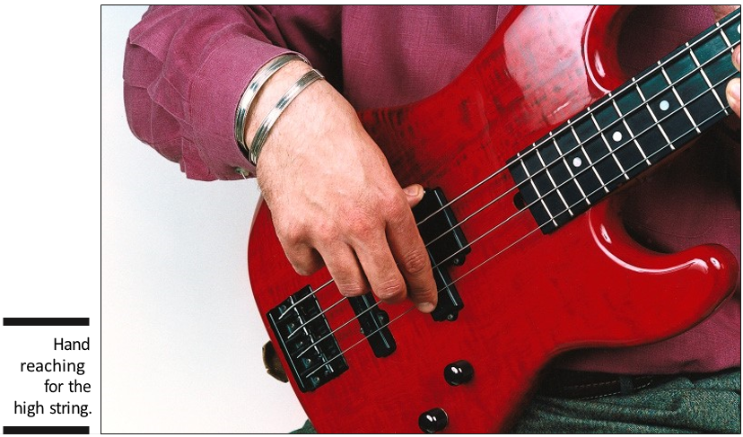Pick-style playing
Some players prefer to use a pick (a small triangular plastic piece, about the size of a quarter) to produce a note instead of using their fingers. Because the strings on a bass are much heavier than on a guitar, your bass pick needs to be heavier as well.
You can hold the pick in one of two ways: closed or open.
Slap-Style Playing
The technique behind slap style or thumb style is to strike a low string with the side of your thumb, giving it a percussive sound (a sharp attack and decay of the note, like a drum), and then to snap (or pop) a high string with your index finger.
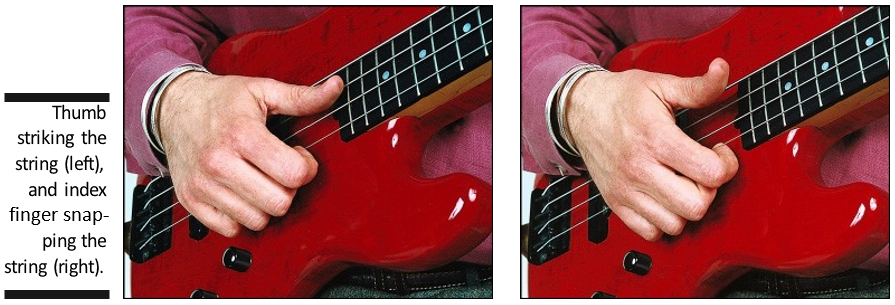Don’t pull too hard on the high string, or you may break it. Only a small amount of force is required.
STRING NUMERING AND STANDARD TUNING
Strings are numbered from the thinnest string (1st string) to the thickest (4th string or higher but the most common number of string is 4). The tuning is given from the 4th string to the 1st string: E-A-D-G. This tuning (E-A-D-G) is called standard tuning.
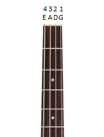FRET NUMBERING
Frets are numbered from the headstock toward the body starting with 1. Sometimes the number 0 or letter O is used to denote an open string, or one that is played without fretting a note.
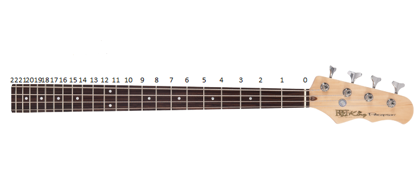FRETBOARD MOVEMENT
Guitarists can move horizontally up or down the fretboard, or vertically across the fretboard. These are common terms used to communicate how to shift your hands when playing the guitar.
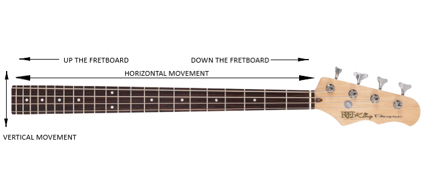FRETBOARD NOTE LOCATIONS
This section will show you where each note on the guitar can be played. The notation is given for completeness. Reading notation will be explained in the reading lessons.
1ST String Notes (G String)
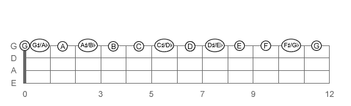2nd String Notes (D String)
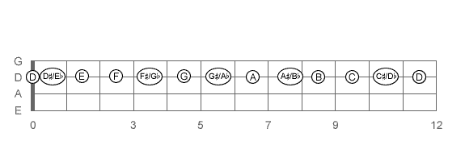3rd String Notes (A String
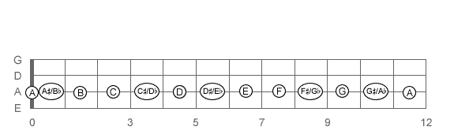4thString Notes (E String)
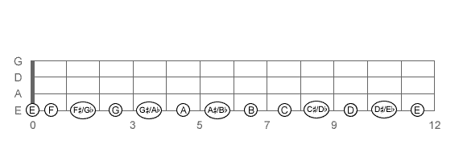Complete Notes on the Bass
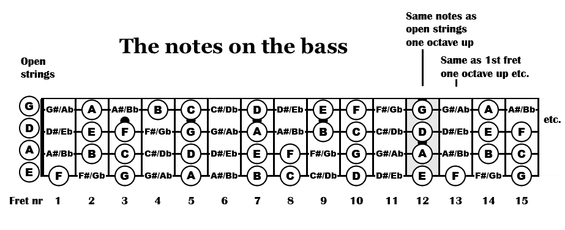Tablature shows locations on the fretboard of the guitar and is a particular way of writing music for guitar. Each of the 4 lines corresponds to the strings on the guitar.
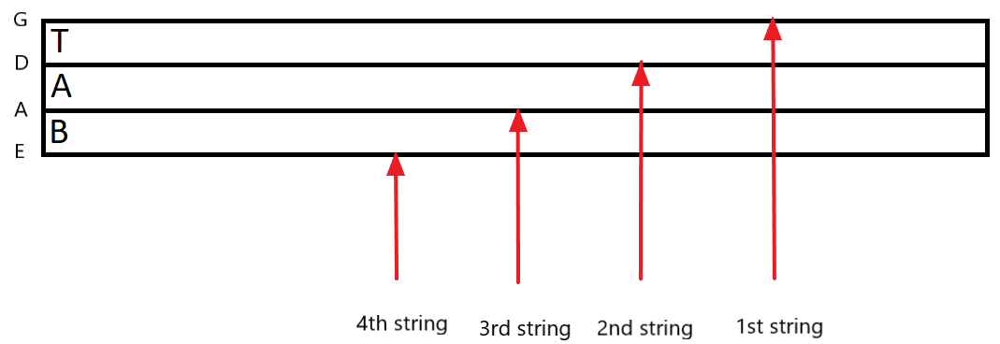Fret numbers are placed on the lines to indicate which note should be played. Notes are played sequentially from left to right unless they are on top of one another, in which case they are played simultaneously.
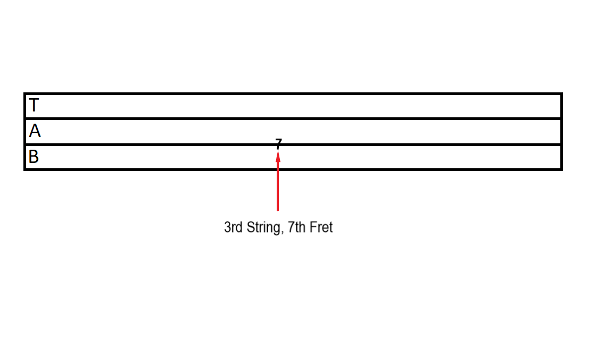The following sections lead you through the different tuning techniques. It may take you a little time to get used to hearing the low frequencies of the bass notes, but with practice and a few tricks, you’ll be able to tune a bass in no time.
Whether you’re playing alone or with others, you need to use an aural reference source, called a reference pitch, for tuning your strings. A reference pitch is a note you use as the basis for tuning the strings on your bass. It’s to tuning what the North Star is to ship navigation. The piano is an excellent source for a reference pitch because its tuning is very stable. But you’re not limited to the piano — many other sources are available as well.
Reference pitch sources to use when playing alone
A tuner
Using an electronic tuner is by far the easiest way to tune your bass. The modern tuners have a display that lets you see exactly where your string is pitch wise, whether it’s sharp (too high) or flat (too low), and what note you’re closest to (in case your bass gets knocked around, and the G string is now closer in sound to F than G).
Your own strings
When you play alone, you can tune your bass relative to itself, which is referred to as relative tuning. With relative tuning, you use one string, usually the low E, as a reference pitch and adjust the other three so they’re in tune with it.
A tuning fork
The tuning fork gives you one reference pitch only. It corresponds to the open A string, the second-thickest string (although several octaves apart), or the second string from the top (closest to your head).
Reference pitch sources to use when playing with others
A piano
Because the tuning on a piano is very stable, it serves as an excellent source for a reference pitch.
A guitar
The lowest (thickest) four strings of a guitar correspond to the four strings of your bass. Going from low to high (thick to thin), the strings are E, A, D, and G. Bear in mind that the guitar strings sound one octave higher than your bass strings. They’re the same note, only higher.
Bass Guitar for Dummies
Bass 101
Beginner Bass Guitar Video Lesson - TalkingBass
Bass Guitar Lessons for Beginners - Udemy
Beginner to Badass Bass Lesson - BassBuzz